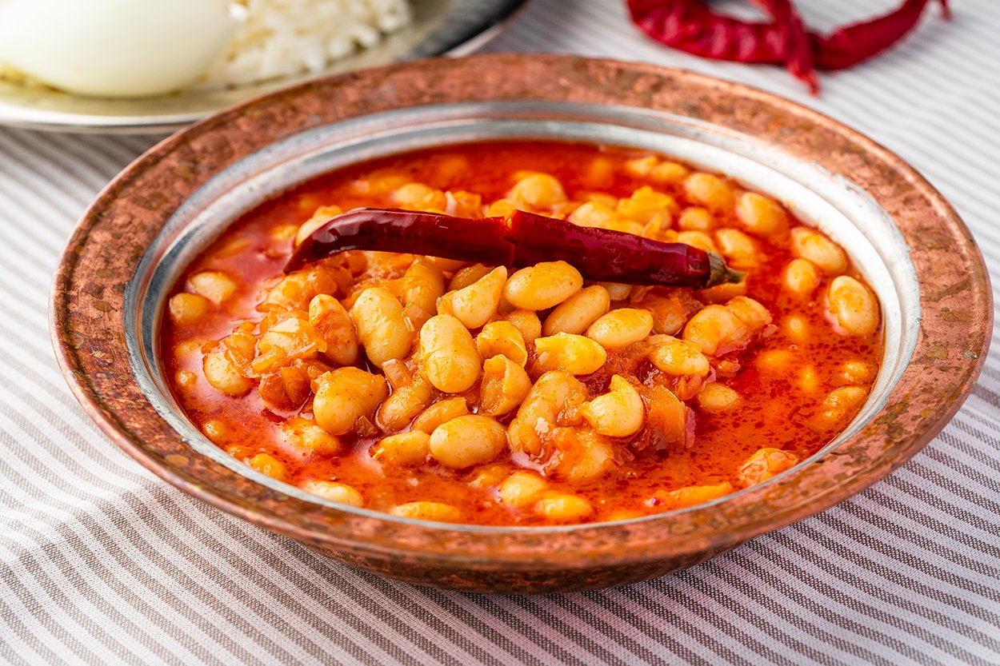

Kusursuz Yapmanın Yollarıyla: Etsiz Kuru Fasulye Tarifi

Yemek Hakkında
- Kaç Kişilik: 6 Kişilik
Hazırlama Süresi: 30 dakika
Pişirme Süresi: 90 dakika
Etsiz Kuru Fasulye Tarifi İçin Malzemeler:
Ön Hazırlık İçin:
- 2 su bardağı kuru fasulye
- 2 litre soğuk su
- 1 su bardağı süt
Haşlamak İçin:
- 2 litre soğuk su
- 1 yemek kaşığı tuz
Sosu İçin:
- 5 yemek kaşığı tereyağı
- 4 yemek kaşığı zeytinyağı
- 2 adet kuru soğan(orta boy)
- 1 tatlı kaşığı toz kırmızı biber
- 1 yemek kaşığı domates salçası
- 2,5 su bardağı et suyu(ya da normal su)
- 1 çay kaşığı tuz
- 3 adet kırmızı biber(kuru)
Etsiz Kuru Fasulye Tarifi Nasıl Yapılır?
- Fasulyeleri derin bir kaseye koyun, üstüne su ve sütü koyup karıştırın ve buzdolabında 8-12 saat bekletin.
- Fasulyeleri dolaptan alıp süzün ve soğuk su ile çok iyi yıkayın. Bu işlem esnasında fasulyeleri ovalamamaya özen gösterin.
- Yıkanmış fasulyeleri geniş tabanlı bir tencereye aktarın, su ve tuz ekleyip önce yüksek ateşte pişirmeye başlayın. Kaynamayı gördükten sonra ateşi en kısık konuma getirin. Pişirme esnasında oluşan köpükleri kaşıkla alın ve fasulyeler hareketlenmesin diye bir bardak kadar soğuk su ekleyin.
- Fasulyelerin piştiğini anlamak için 1-2 tanesini alıp kaşıkla ezin, dışları bütün ve içleri yumuşak hale gelince ocaktan alıp süzün, kenarda bekletin.
- Sosunu hazırlamak için ilk olarak soğanları çok küçük ve ince küpler halinde doğrayın. Geniş tabanlı bir tencereye tereyağı ve zeytinyağını koyup soğanları da ekleyin ve orta ateşte tamamen yumuşayana kadar renk aldırmadan pişirin.
- Pişen soğanların üstüne toz kırmızı biber ve salçayı da ekleyip kokuları açığa çıkana kadar kavurun. Son olarak et suyu (ya da su) ve tuzu da ekleyin, kısık ateşte bir taşım kaynatın.
- Fasulyeleri sıcak sosun içine aktarın, kuru biberleri de ekleyin ve kısık ateşte içine kesinlikle kaşıkla müdahale etmeden, ara ara tencereyi sallayarak pişirin.
- Kuru fasulyeniz sosla bütünleşip üstünde bir kaymak tabakası oluştuğunda yemeğiniz hazır olmuş demektir. Bu işlem yaklaşık 20 dakika sürebilir.
- Pişen yemeği oda sıcaklığına geldikten sonra buzdolabına kaldırın ve bir gece dinlendirin.
- Servis etmeden önce fasulyeyi dolaptan çıkarın ve orta ateşte yine içine kaşık değdirmeden hafifçe sallayarak ısıtın.
- Sıcak kuru fasulyenizi yanında pilav, turşu ve soğanla servis edebilirsiniz. Afiyet olsun.
Tarifi Ekleyen Kullanıcı: Burak